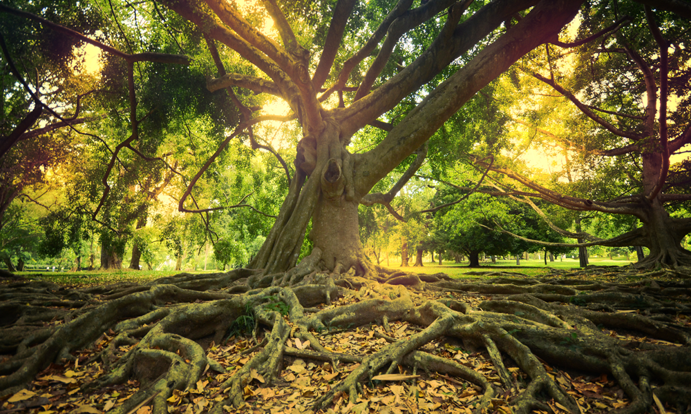
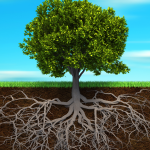
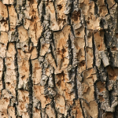
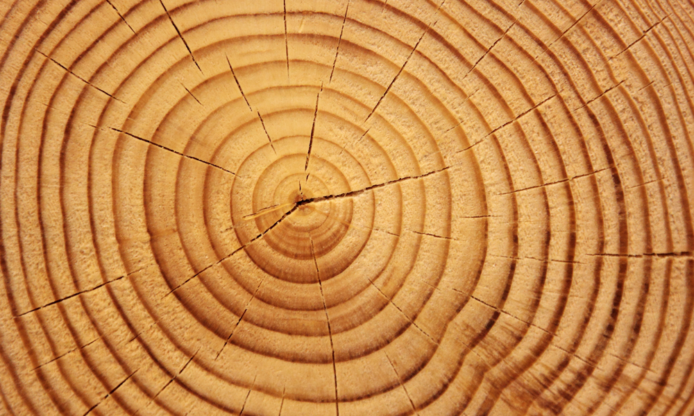
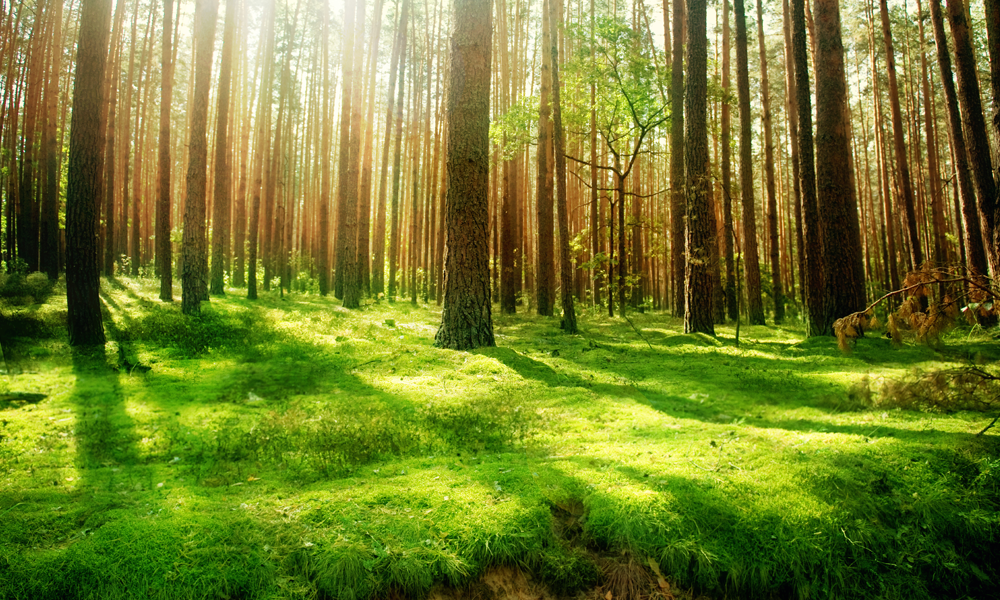

Our friend the tree
Trees aren't just wood; they are, like everything Mother Nature, a masterpiece. A sophisticated system ensures the long life of the largest organisms on earth. A tree consists of roots, trunk and leafy crown, each species having its own special characteristics. These characteristics can deviate from the norm due to external conditions and show the enormous flexibility of the woody plant. Bizarre shapes occasionally arise and touch our hearts and eyes. We take out the magnifying glass and take a closer look at the marvel.

Tree with big roots.
This is how the tree distributes its tasks
| Part of the tree | Image | Description |
|---|---|---|
| Root network |  | the roots serve to absorb water and nutrients and act as anchoring in the ground |
| Wood bark |  |
the tree trunk connects the roots with the branches and leaves, and ensures an exchange of the required substances |
| Branches and leaves | the leaves also absorb the energy of the sun and carry out photosynthesis |
It should be big and strong
Plant sprout
A seed sprouts and over time a stem develops from the shoot. This not only grows in height, but also in width. This is because the so-called cambium is located directly under the bark. A layer that forms new wood cells during the growth period and not only inwards: the outer bark is also supplied with young bast cells for reinforcement and the cambium also grows with increasing thickness.
One ring at a time

Three trunk cross section annual rings
The cells do not grow evenly all year round. Every year in spring, a lot of water and nutrients are needed for the leaves to emerge. For this purpose, spacious and thin-walled cells of a lighter color are produced, the early wood. From late summer the cambium switches to narrow, thick-walled and the darker cells of the late wood are on the program. Voila, a beautiful pattern has emerged, the shape of the annual rings.
Sapwood, heartwood or ripening wood?
The still younger and mostly light-colored wood in the outer annual rings is called sapwood. In some tree species, the inner sapwood becomes cored. The heartwood stores substances such as resin, wax, fats and tannins and thus becomes more resistant, harder and darker. If there is a nucleation without tannin, one speaks of a ripening wood. There are also tree species such as the elm, in which we can find all three species. This is then called the core ripening wood.
Firmly anchored
If a tree had no roots, it would not be able to survive. Not only would it tip over, the entire supply would be impossible. Depending on the nature of the soil and the type of tree, the root system can be roughly divided into three systems:
- Shallow roots - after the main root has died off, the crown roots attach their vertical side shoots to the base of the shoot; the result is a flat but large root plate
- Heart Roots - with the rhizome as the base, there are many main vertical roots; there are numerous root branches that radiate or diagonally from it
- Taproots - here the roots run very deep into the ground like a pole as a direct extension of the trunk

Look into the forest
But no matter what type of root, each one enters into a symbiosis with mushrooms to bring the water on its way up. Just like us humans, the trees are hardly able to survive on their own and in exchange with the creatures around them. The health of the forest is also based on constant give and take. The balance creates a pleasant climate and good togetherness. This is no different in the forest than in the city.